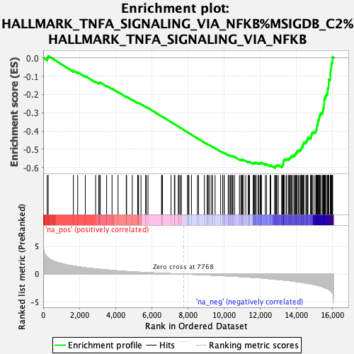
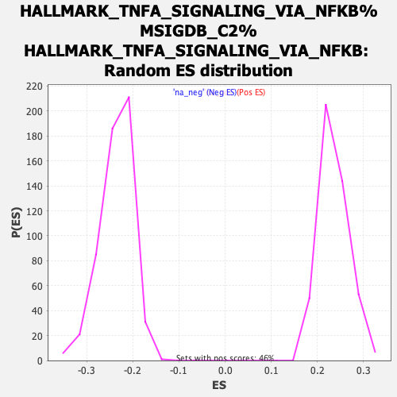

| | | Dataset | rankings |
| Phenotype | NoPhenotypeAvailable |
| Upregulated in class | na_neg |
| GeneSet | HALLMARK_TNFA_SIGNALING_VIA_NFKB%MSIGDB_C2%HALLMARK_TNFA_SIGNALING_VIA_NFKB |
| Enrichment Score (ES) | -0.6014927 |
| Normalized Enrichment Score (NES) | -2.5553222 |
| Nominal p-value | 0.0 |
| FDR q-value | 0.0 |
| FWER p-Value | 0.0 |
Table: GSEA Results Summary

Fig 1: Enrichment plot: HALLMARK_TNFA_SIGNALING_VIA_NFKB%MSIGDB_C2%HALLMARK_TNFA_SIGNALING_VIA_NFKB
Profile of the Running ES Score & Positions of GeneSet Members on the Rank Ordered List
| PROBE | GENE SYMBOL | GENE_TITLE | RANK IN GENE LIST | RANK METRIC SCORE | RUNNING ES | CORE ENRICHMENT | | 1 | TNIP1 | | | 223 | 3.057 | 0.0005 | No |
| 2 | EFNA1 | | | 277 | 2.920 | 0.0111 | No |
| 3 | TRIP10 | | | 1670 | 1.451 | -0.0695 | No |
| 4 | ACKR3 | | | 1908 | 1.328 | -0.0781 | No |
| 5 | TNIP2 | | | 2330 | 1.136 | -0.0992 | No |
| 6 | CCND1 | | | 2900 | 0.922 | -0.1306 | No |
| 7 | PMEPA1 | | | 3073 | 0.874 | -0.1372 | No |
| 8 | VEGFA | | | 3095 | 0.866 | -0.1344 | No |
| 9 | PDLIM5 | | | 3159 | 0.848 | -0.1343 | No |
| 10 | PANX1 | | | 3508 | 0.745 | -0.1527 | No |
| 11 | BIRC2 | | | 3808 | 0.660 | -0.1683 | No |
| 12 | JAG1 | | | 4140 | 0.577 | -0.1864 | No |
| 13 | IFNGR2 | | | 4596 | 0.468 | -0.2128 | No |
| 14 | DNAJB4 | | | 4613 | 0.466 | -0.2116 | No |
| 15 | IL18 | | | 4927 | 0.406 | -0.2293 | No |
| 16 | LAMB3 | | | 5225 | 0.351 | -0.2463 | No |
| 17 | EDN1 | | | 5246 | 0.348 | -0.2459 | No |
| 18 | TUBB2A | | | 5273 | 0.343 | -0.2459 | No |
| 19 | ZBTB10 | | | 5410 | 0.320 | -0.2530 | No |
| 20 | SMAD3 | | | 5666 | 0.273 | -0.2677 | No |
| 21 | B4GALT1 | | | 5701 | 0.266 | -0.2686 | No |
| 22 | ID2 | | | 5796 | 0.252 | -0.2733 | No |
| 23 | F3 | | | 6545 | 0.140 | -0.3197 | No |
| 24 | INHBA | | | 6573 | 0.136 | -0.3207 | No |
| 25 | TNC | | | 6596 | 0.132 | -0.3215 | No |
| 26 | TANK | | | 7070 | 0.075 | -0.3509 | No |
| 27 | RELA | | | 7257 | 0.052 | -0.3623 | No |
| 28 | SGK1 | | | 7280 | 0.048 | -0.3635 | No |
| 29 | EHD1 | | | 7472 | 0.029 | -0.3754 | No |
| 30 | YRDC | | | 7514 | 0.024 | -0.3778 | No |
| 31 | IL6ST | | | 7586 | 0.018 | -0.3822 | No |
| 32 | RCAN1 | | | 7640 | 0.012 | -0.3855 | No |
| 33 | STAT5A | | | 7981 | -0.020 | -0.4068 | No |
| 34 | B4GALT5 | | | 8026 | -0.026 | -0.4094 | No |
| 35 | SOD2 | | | 8058 | -0.030 | -0.4112 | No |
| 36 | SQSTM1 | | | 8200 | -0.047 | -0.4199 | No |
| 37 | G0S2 | | | 8531 | -0.090 | -0.4402 | No |
| 38 | SPSB1 | | | 8588 | -0.097 | -0.4432 | No |
| 39 | LITAF | | | 8914 | -0.140 | -0.4630 | No |
| 40 | PPAP2B | | | 9067 | -0.159 | -0.4718 | No |
| 41 | TNFAIP8 | | | 9082 | -0.162 | -0.4719 | No |
| 42 | PLK2 | | | 9134 | -0.169 | -0.4743 | No |
| 43 | DENND5A | | | 9214 | -0.179 | -0.4785 | No |
| 44 | MSC | | | 9324 | -0.194 | -0.4844 | No |
| 45 | SDC4 | | | 9361 | -0.199 | -0.4857 | No |
| 46 | TIPARP | | | 9507 | -0.223 | -0.4938 | No |
| 47 | SERPINE1 | | | 9813 | -0.273 | -0.5116 | No |
| 48 | SNN | | | 9928 | -0.293 | -0.5174 | No |
| 49 | KLF10 | | | 10006 | -0.304 | -0.5208 | No |
| 50 | TNFAIP2 | | | 10011 | -0.305 | -0.5196 | No |
| 51 | ABCA1 | | | 10233 | -0.342 | -0.5319 | No |
| 52 | TSC22D1 | | | 10254 | -0.344 | -0.5315 | No |
| 53 | MAP2K3 | | | 10332 | -0.355 | -0.5346 | No |
| 54 | SERPINB8 | | | 10372 | -0.361 | -0.5354 | No |
| 55 | GFPT2 | | | 10415 | -0.371 | -0.5363 | No |
| 56 | FUT4 | | | 10479 | -0.383 | -0.5384 | No |
| 57 | RHOB | | | 10497 | -0.387 | -0.5376 | No |
| 58 | HBEGF | | | 10585 | -0.402 | -0.5412 | No |
| 59 | PER1 | | | 10855 | -0.451 | -0.5559 | No |
| 60 | IRS2 | | | 10932 | -0.466 | -0.5585 | No |
| 61 | DRAM1 | | | 10987 | -0.479 | -0.5596 | No |
| 62 | IER5 | | | 11009 | -0.482 | -0.5586 | No |
| 63 | CCRL2 | | | 11018 | -0.484 | -0.5568 | No |
| 64 | PPP1R15A | | | 11087 | -0.499 | -0.5587 | No |
| 65 | TRIB1 | | | 11204 | -0.524 | -0.5635 | No |
| 66 | MCL1 | | | 11340 | -0.551 | -0.5694 | No |
| 67 | DUSP4 | | | 11369 | -0.558 | -0.5685 | No |
| 68 | PTGER4 | | | 11415 | -0.566 | -0.5686 | No |
| 69 | RIPK2 | | | 11614 | -0.609 | -0.5782 | No |
| 70 | TNFAIP6 | | | 11626 | -0.611 | -0.5760 | No |
| 71 | CD44 | | | 11667 | -0.621 | -0.5755 | No |
| 72 | BTG3 | | | 11676 | -0.623 | -0.5731 | No |
| 73 | AREG | | | 11738 | -0.637 | -0.5739 | No |
| 74 | CSF1 | | | 11777 | -0.644 | -0.5732 | No |
| 75 | SLC16A6 | | | 11881 | -0.665 | -0.5765 | No |
| 76 | PHLDA1 | | | 11933 | -0.676 | -0.5765 | No |
| 77 | MAP3K8 | | | 12002 | -0.692 | -0.5775 | No |
| 78 | ATP2B1 | | | 12018 | -0.695 | -0.5751 | No |
| 79 | NFKB1 | | | 12059 | -0.706 | -0.5743 | No |
| 80 | CEBPB | | | 12068 | -0.709 | -0.5714 | No |
| 81 | CD83 | | | 12287 | -0.776 | -0.5814 | No |
| 82 | CEBPD | | | 12346 | -0.793 | -0.5813 | No |
| 83 | IER3 | | | 12546 | -0.849 | -0.5897 | No |
| 84 | HES1 | | | 12586 | -0.857 | -0.5881 | No |
| 85 | TRAF1 | | | 12800 | -0.923 | -0.5971 | Yes |
| 86 | DUSP1 | | | 12843 | -0.934 | -0.5953 | Yes |
| 87 | NINJ1 | | | 12849 | -0.937 | -0.5911 | Yes |
| 88 | NFKBIA | | | 12907 | -0.954 | -0.5902 | Yes |
| 89 | SPHK1 | | | 12924 | -0.959 | -0.5866 | Yes |
| 90 | KLF9 | | | 13006 | -0.984 | -0.5870 | Yes |
| 91 | NAMPT | | | 13188 | -1.051 | -0.5934 | Yes |
| 92 | LIF | | | 13230 | -1.061 | -0.5909 | Yes |
| 93 | ETS2 | | | 13236 | -1.062 | -0.5862 | Yes |
| 94 | ATF3 | | | 13262 | -1.075 | -0.5826 | Yes |
| 95 | GEM | | | 13281 | -1.082 | -0.5786 | Yes |
| 96 | PNRC1 | | | 13283 | -1.082 | -0.5735 | Yes |
| 97 | IL15RA | | | 13285 | -1.082 | -0.5684 | Yes |
| 98 | FOSL2 | | | 13292 | -1.085 | -0.5636 | Yes |
| 99 | IFIT2 | | | 13309 | -1.091 | -0.5594 | Yes |
| 100 | KYNU | | | 13327 | -1.097 | -0.5553 | Yes |
| 101 | GCH1 | | | 13430 | -1.130 | -0.5563 | Yes |
| 102 | FJX1 | | | 13462 | -1.139 | -0.5528 | Yes |
| 103 | NFKB2 | | | 13558 | -1.171 | -0.5532 | Yes |
| 104 | BIRC3 | | | 13604 | -1.188 | -0.5504 | Yes |
| 105 | RNF19B | | | 13630 | -1.201 | -0.5462 | Yes |
| 106 | BMP2 | | | 13674 | -1.219 | -0.5431 | Yes |
| 107 | ZC3H12A | | | 13725 | -1.237 | -0.5404 | Yes |
| 108 | RELB | | | 13739 | -1.243 | -0.5353 | Yes |
| 109 | GPR183 | | | 13815 | -1.275 | -0.5339 | Yes |
| 110 | NR4A3 | | | 13895 | -1.304 | -0.5327 | Yes |
| 111 | PLAU | | | 13927 | -1.321 | -0.5283 | Yes |
| 112 | PTPRE | | | 13953 | -1.335 | -0.5235 | Yes |
| 113 | PDE4B | | | 14009 | -1.360 | -0.5205 | Yes |
| 114 | KLF2 | | | 14019 | -1.364 | -0.5146 | Yes |
| 115 | NR4A1 | | | 14040 | -1.373 | -0.5093 | Yes |
| 116 | BHLHE40 | | | 14109 | -1.406 | -0.5069 | Yes |
| 117 | TGIF1 | | | 14165 | -1.430 | -0.5035 | Yes |
| 118 | REL | | | 14238 | -1.467 | -0.5011 | Yes |
| 119 | NFKBIE | | | 14265 | -1.479 | -0.4956 | Yes |
| 120 | DUSP5 | | | 14291 | -1.497 | -0.4901 | Yes |
| 121 | SLC2A6 | | | 14319 | -1.511 | -0.4846 | Yes |
| 122 | BCL3 | | | 14366 | -1.535 | -0.4802 | Yes |
| 123 | TNFAIP3 | | | 14372 | -1.538 | -0.4731 | Yes |
| 124 | IFIH1 | | | 14407 | -1.559 | -0.4679 | Yes |
| 125 | KLF4 | | | 14415 | -1.563 | -0.4608 | Yes |
| 126 | PFKFB3 | | | 14529 | -1.630 | -0.4602 | Yes |
| 127 | CFLAR | | | 14553 | -1.641 | -0.4538 | Yes |
| 128 | EIF1 | | | 14603 | -1.666 | -0.4490 | Yes |
| 129 | NFE2L2 | | | 14621 | -1.673 | -0.4421 | Yes |
| 130 | CDKN1A | | | 14644 | -1.688 | -0.4354 | Yes |
| 131 | NFIL3 | | | 14787 | -1.781 | -0.4358 | Yes |
| 132 | MXD1 | | | 14800 | -1.787 | -0.4281 | Yes |
| 133 | GADD45A | | | 14829 | -1.799 | -0.4213 | Yes |
| 134 | DDX58 | | | 14849 | -1.813 | -0.4138 | Yes |
| 135 | BTG2 | | | 14889 | -1.831 | -0.4075 | Yes |
| 136 | JUN | | | 14981 | -1.889 | -0.4043 | Yes |
| 137 | IER2 | | | 15077 | -1.969 | -0.4009 | Yes |
| 138 | EGR3 | | | 15092 | -1.976 | -0.3923 | Yes |
| 139 | TNFSF9 | | | 15130 | -2.006 | -0.3851 | Yes |
| 140 | CYR61 | | | 15131 | -2.006 | -0.3755 | Yes |
| 141 | TLR2 | | | 15153 | -2.026 | -0.3672 | Yes |
| 142 | ICAM1 | | | 15187 | -2.050 | -0.3595 | Yes |
| 143 | SAT1 | | | 15197 | -2.064 | -0.3502 | Yes |
| 144 | PTGS2 | | | 15202 | -2.070 | -0.3406 | Yes |
| 145 | PLEK | | | 15245 | -2.114 | -0.3332 | Yes |
| 146 | NR4A2 | | | 15271 | -2.137 | -0.3246 | Yes |
| 147 | TAP1 | | | 15284 | -2.143 | -0.3151 | Yes |
| 148 | CCNL1 | | | 15316 | -2.167 | -0.3068 | Yes |
| 149 | BCL6 | | | 15377 | -2.228 | -0.2999 | Yes |
| 150 | KDM6B | | | 15456 | -2.320 | -0.2938 | Yes |
| 151 | ZFP36 | | | 15471 | -2.335 | -0.2835 | Yes |
| 152 | BTG1 | | | 15496 | -2.365 | -0.2738 | Yes |
| 153 | CXCL10 | | | 15526 | -2.415 | -0.2641 | Yes |
| 154 | FOS | | | 15527 | -2.416 | -0.2526 | Yes |
| 155 | LDLR | | | 15540 | -2.434 | -0.2417 | Yes |
| 156 | DUSP2 | | | 15542 | -2.438 | -0.2302 | Yes |
| 157 | CCL2 | | | 15565 | -2.463 | -0.2198 | Yes |
| 158 | JUNB | | | 15612 | -2.524 | -0.2107 | Yes |
| 159 | MAFF | | | 15647 | -2.578 | -0.2005 | Yes |
| 160 | CCL5 | | | 15715 | -2.678 | -0.1920 | Yes |
| 161 | EGR1 | | | 15731 | -2.699 | -0.1801 | Yes |
| 162 | SLC2A3 | | | 15736 | -2.703 | -0.1674 | Yes |
| 163 | IL1B | | | 15778 | -2.784 | -0.1567 | Yes |
| 164 | IRF1 | | | 15787 | -2.800 | -0.1439 | Yes |
| 165 | PLAUR | | | 15792 | -2.808 | -0.1308 | Yes |
| 166 | GADD45B | | | 15794 | -2.810 | -0.1175 | Yes |
| 167 | FOSB | | | 15877 | -2.948 | -0.1086 | Yes |
| 168 | EGR2 | | | 15878 | -2.950 | -0.0945 | Yes |
| 169 | SOCS3 | | | 15882 | -2.960 | -0.0806 | Yes |
| 170 | KLF6 | | | 15893 | -3.017 | -0.0668 | Yes |
| 171 | CXCL2 | | | 15918 | -3.084 | -0.0537 | Yes |
| 172 | IL7R | | | 15940 | -3.168 | -0.0399 | Yes |
| 173 | MYC | | | 15952 | -3.202 | -0.0253 | Yes |
| 174 | IL6 | | | 16002 | -3.423 | -0.0121 | Yes |
| 175 | NFAT5 | | | 16006 | -3.445 | 0.0042 | Yes |
Table: GSEA details [plain text format]

Fig 2: HALLMARK_TNFA_SIGNALING_VIA_NFKB%MSIGDB_C2%HALLMARK_TNFA_SIGNALING_VIA_NFKB: Random ES distribution
Gene set null distribution of ES for HALLMARK_TNFA_SIGNALING_VIA_NFKB%MSIGDB_C2%HALLMARK_TNFA_SIGNALING_VIA_NFKB